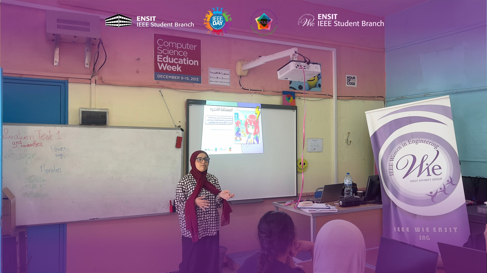
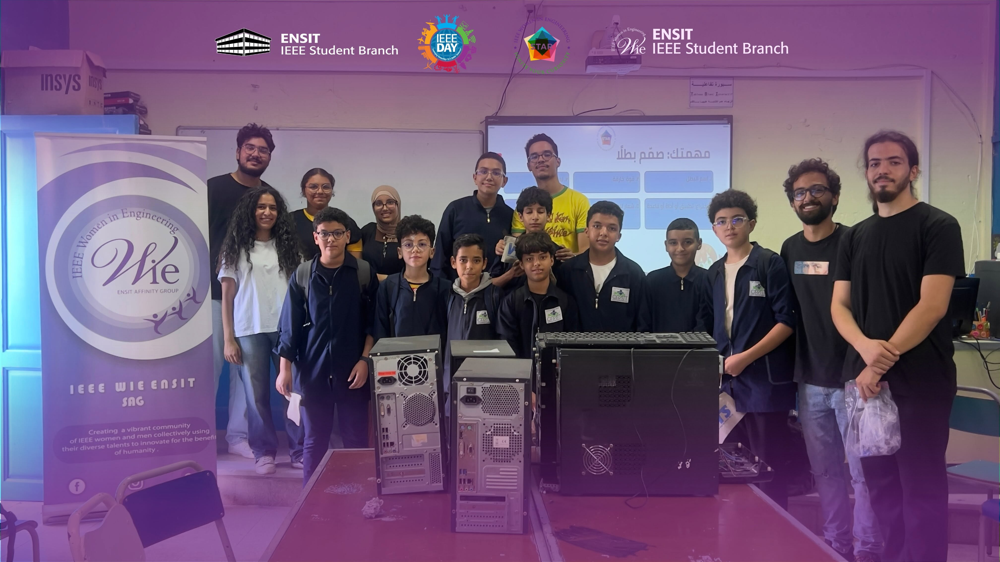

WIE event / STAR Program
AI begins
with curiosity.
October 14
On October 14th, we introduced students to the exciting world of Artificial Intelligence through interactive activities and engaging discussions. They discovered how AI works, explored its applications in everyday life, and learned how technology can be used to create, innovate, and solve problems.
The session encouraged young minds to explore, imagine, and shape the future, one idea at a time.

